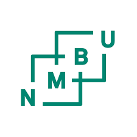
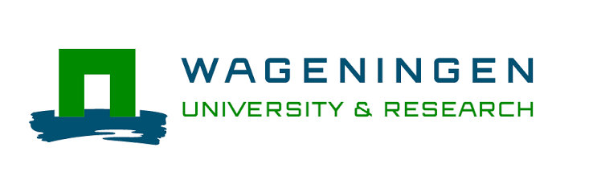
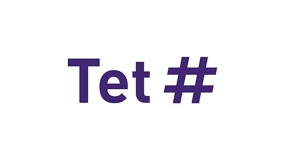
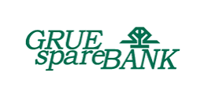
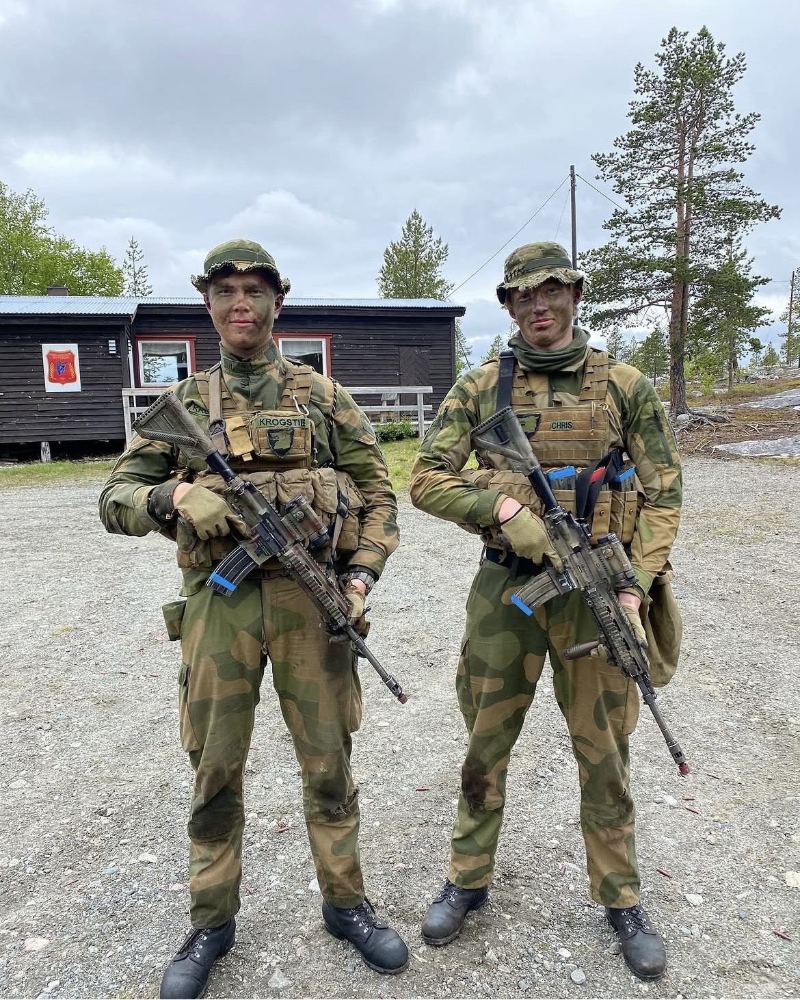
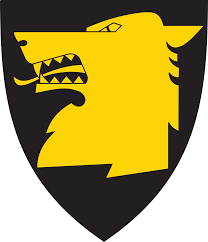

Om meg
Jeg heter Simen, sisteårs masterstudent i Data Science med spesialisering i Geoinformatikk ved NMBU. Jeg liker å bygge løsninger som kombinerer maskinlæring, romlig analyse og automatisering — jeg har jobbet med alt fra bildeanalyse til romlige mobilitetsindikatorer og GIS-prosesser. Våren 2026 var jeg på utveksling ved Wageningen University, hvor jeg fordypet meg videre i fjernanalyse og geoinformatikk.
Ved siden av studiene har jeg jobbet som hjelpelærer i MLA210 ved NMBU, hvor jeg har støttet andre studenter i geospatial kursaktivitet, og jeg har tatt på meg lederansvar som festansvarlig for Samfunnet i Ås. Jeg har også noen års erfaring med kundekontakt som rådgiver i dagligbank hos Grue Sparebank, noe som har skjerpet hvordan jeg kommuniserer tekniske ideer til et ikke-teknisk publikum.
- M.Sc. Data Science @ NMBU
- Utveksling semester @ Wageningen University (WUR)
- Data science Intern @ Tet digital
- Hjelpelærer, MLA210 @ NMBU
- Rådgiver dagligbank @ Grue Sparebank
Utdanning
Norges miljø- og biovitenskapelige universitet (NMBU)
Spesialisering i Geoinformatikk
Sisteårs masterstudent i data science, med erfaring innen maskinlæring, dyp læring, bildeanalyse, romlig analyse og automatisering av GIS-prosesser.

Wageningen University & Research (WUR)
Plassholdertekst — en kort beskrivelse av utvekslingssemesteret ved Wageningen kommer her, og vil dekke fag, forskningsfokus og viktige læringspunkter.

Tet digital
Plassholdertekst — en kort beskrivelse av arbeidet hos Tet digital kommer her, og vil dekke verktøy, systemer og effekten av praksisoppholdet.

Grue Sparebank
Plassholdertekst — en kort beskrivelse av arbeidet hos Grue Sparebank kommer her, og vil dekke ansvarsområder, kundearbeid og effekt.

NMBU
Hjelpelærer i kurset MLA210 – Machine Learning With Examples from Technology and Finance. Holdt øvingstimer og rettet obligatoriske innleveringer.
Kompetanse
Frivillighet
Festansvarlig, vaktansvarlig og ordensvakt @ Samfunnet i Ås, 2022 – d.d.
Utenfor teknologi
På fritiden liker jeg å være ute, alt fra løping til fjellturer, både sommer og vinter.
Militærtjeneste
Grensevakttjeneste for Hæren langs den norsk-russiske grensen, ved Jegerbattaljonen, Garnisonen i Sør-Varanger (GSV).




Tilleggsinformasjon
- Norsk — Morsmål
- Engelsk — Flytende, skriftlig og muntlig
Motivasjon
Mot slutten av studiet ser jeg etter muligheter til å bruke data science og maskinlæring til å løse virkelige problemer på en effektiv måte — jeg er åpen for roller som data scientist på tvers av bransjer, ikke bare geospatiale. Alltid gøy å komme i kontakt med andre som jobber med data science, ML eller AI.